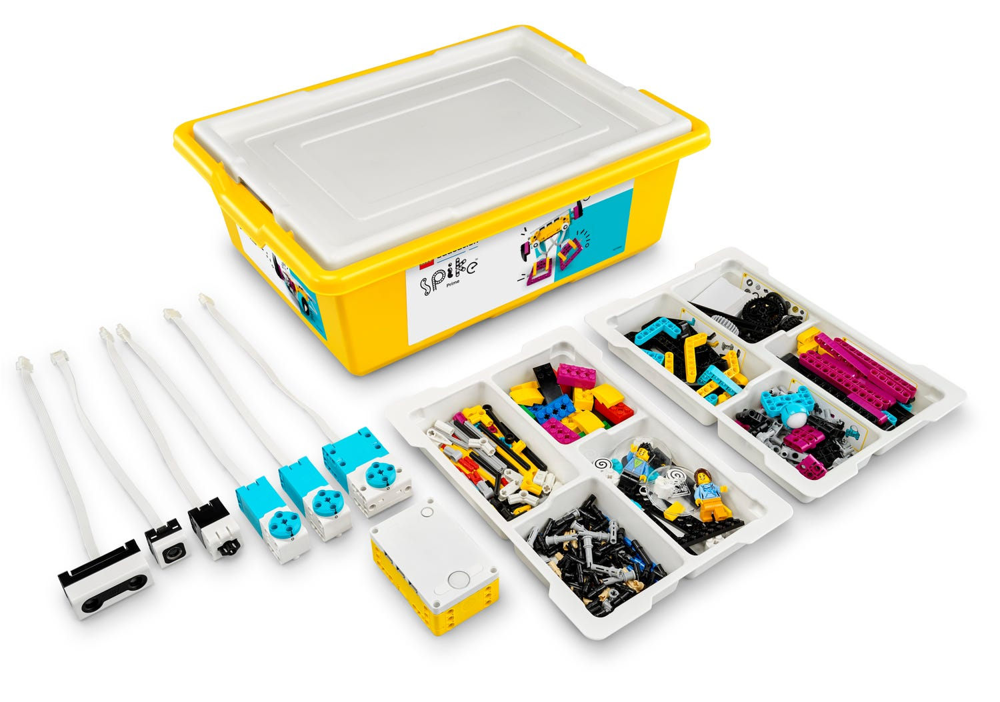

Robotyka Edukacyjna
Czym jest?
Zastosowania
Tabela
Bibliografia
Zajęcia z LEGO Education
Łączenie robotyki z matematyką
Wprowadzenie do programowania
Zestaw LEGO Mindstorms
Zestaw LEGO Spike Prime

Dlaczego robotyka pomaga?
Uczy myślenia logicznego
Rozwija kreatywność
Wprowadza praktyczne zastosowania fizyki
Przykładowe zestawy robotyczne
Zestaw
Poziom trudności
Zastosowanie
LEGO WeDo
Łatwy
Nauka podstaw programowania
LEGO Mindstorms
Średni
Budowa zaawansowanych robotów
LEGO Spike Prime
Średni
Nauka STEAM i eksperymenty
Bibliografia
Wikipedia – Lego Education
Materiały edukacyjne LEGO
Zdjęcia udostępnione na licencji Creative Commons